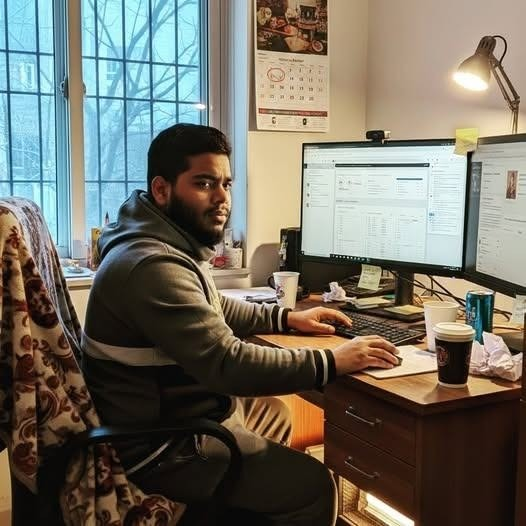
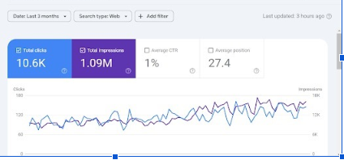
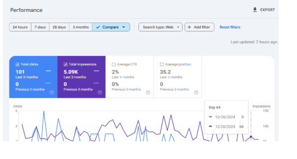
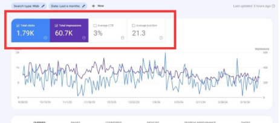
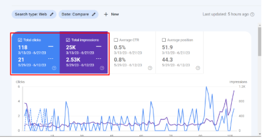

Python
Automation, data processing, research workflows, tools and custom solutions.
Research, strategy and technology for building and growing digital brands.
Core skillsPython·SEO

I'm Md. Shamim Islam, a researcher and brand builder. I study businesses, markets, audiences and competitors to find where the real opportunity is, then use strategy, SEO, Python, websites, content and advertising to build on it.
I don't sell isolated services. I work out the problem, choose a practical direction, and use the right tools to execute and grow the brand.
Each area supports the others, so work starts with research and ends with growth.
Research leads every project. It shows where the real opportunity is, so the work that follows has a clear reason.
Business, market, audience, competitors and brand. Finding the real problem or opportunity first.
A practical direction based on what the research shows, with clear priorities and next steps.
Websites, content, software and automation made to support that direction.
SEO, paid advertising and marketing, then measured and improved over time.
The work has covered different businesses and goals. Not every project is the same type, so here are the areas it spans. Detailed case studies are being added, and the cards below show the types of work involved.
Real Google Search Console screenshots from my SEO work. Each one is a separate example. Results vary by website, market and timeframe, and none of this is a guarantee.




Python and SEO are where I go deepest. Everything else supports them.
Automation, data processing, research workflows, tools and custom solutions.
Search visibility built on research, from technical foundations to local search and how brands appear in AI-driven search.
Decisions based on evidence about your market, not guesses.
A practical plan you can understand and act on.
I can build the site, content and systems myself.
No guaranteed rankings. Clear plans and steady progress.
Tell me about your business and goals. We will start with the research.